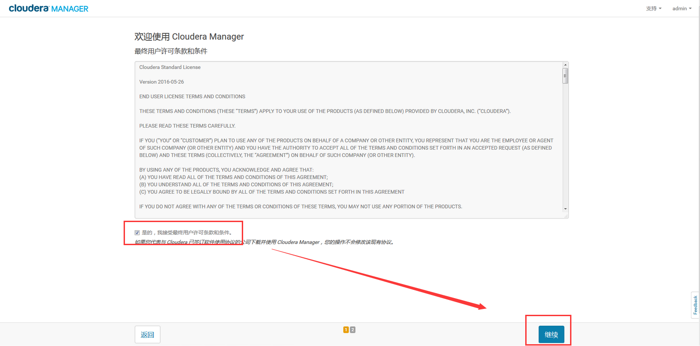

1. 硬件准备
为了保持集群运转正常，请确认需要加入到集群中的节点硬件达到以下标准：
| 节点类型 | CPU | 内存 | 本地存储 | 网络 | 实例数量（最低要求） |
|---|---|---|---|---|---|
| CM节点 | 8核+ | 32G+ | 无特殊要求 | 千兆网卡（2块最佳） | 1 |
| Master节点 | 24核+ | 64G+ | 无特殊要求 | 千兆网卡（2块最佳） | 2 |
| Worker节点 | 32核+ | 128G+ | SAS，4T+ | 千兆网卡（2块最佳） | 3 |
注意： * 集群
最少3台节点，Worker节点服务可部署在Master节点和CM节点上，这样就要求各节点有较高配置。
* 本地存储根据实际数据情况规划配置，使用单块盘做分区即可。
2.环境准备
在系统准备阶段可使用root用户来完成所有操作，请确保root用户可以通过ssh登录该主机，并为root用户设置密码。设置密钥互信
目前CDH5支持centos7，推荐系统版本为centos7。
1.系统安装后将系统通过以下命令升级至最新版本：
yum -y update2.在更新系统后，请使用以下命令关闭系统的SELinux及防火墙：
sed -i -e 's/SELINUX=enforcing/SELINUX=disabled/g' /etc/sysconfig/selinux
setenforce 0
systemctl disable firewalld
systemctl disable iptables修改/etc/sysconfig/network文件中的HOSTNAME部分，将主机名修改为需要的主机名，注意主机名中不要含有下划线，否则后续安装过程会报错。
3.centos7修改主机名：
hostnamectl set-hostname HOSTNAME4.各主机修改完毕后将各自主机名和IP解析加入到DNS解析之中。同时还建议将所有主机名添加到hosts文件，然后分发到各主机。完成此项工作后，请使用reboot命令重启主机。
5.在主机完成重启后，继续进行剩余的操作。请使用以下命令安装必须软件：
yum install sysstat vim tree wget lrzsz screen gcc python-devel gcc-c++ vim ntpdate libyaml libyaml-devel python-setuptools ntp -y如果离线环境，则采用离线安装方式。
6.由于我们当前对于Hadoop集群的Java环境有一些特殊需求，CDH5自带的JDK 1.7无法满足我们的需求，因此需要从Oracle官网下载用于Linux x64系统版本的rpm包，推荐jdk-8u144-linux-x64.rpm，并执行以下命令进行安装：
yum -y erase java
yum -y install jdk-8u144-linux-x64.rpm确保系统中仅有一个JDK版本，如果系统中存在open-jdk，卸载它。
7.由于Cloudera Manager会强制检查主机是否安装运行ntp服务，以此确保集群所有主机时间同步，请使用以下命令保证ntp服务正常运行：
systemctl start ntpd.service
systemctl enable ntpd.service然后同步时间：
ntpdate -u 192.168.XX.XX由于开启透明大内存页可能会带来一些性能问题，官方建议使用以下命令关闭透明大内存页功能：
echo never > /sys/kernel/mm/transparent_hugepage/enabled
echo never > /sys/kernel/mm/transparent_hugepage/defrag请使用以下命令添加修改系统配置，防止Hadoop运行出错：
echo "* soft nofile 65536 " >> /etc/security/limits.conf
echo "* hard nofile 65536 " >> /etc/security/limits.conf
echo "root soft nofile 65536 " >> /etc/security/limits.conf
echo "root hard nofile 65536 " >> /etc/security/limits.conf
echo "* soft memlock unlimited " >> /etc/security/limits.conf
echo "* hard memlock unlimited " >> /etc/security/limits.conf
echo "root soft memlock unlimited " >> /etc/security/limits.conf
echo "root hard memlock unlimited " >> /etc/security/limits.conf
echo "* soft as unlimited " >> /etc/security/limits.conf
echo "* hard as unlimited " >> /etc/security/limits.conf
echo "root soft as unlimited " >> /etc/security/limits.conf
echo "root hard as unlimited " >> /etc/security/limits.conf
echo "vm.max_map_count = 131072" >> /etc/sysctl.conf
echo "vm.swappiness=0" >> /etc/sysctl.conf
sysctl -p3.软件准备
3.1 根据版本下载cloudera-manager.repo
下载该文件到所有节点/etc/yum.repos.d/目录下
即：
[cloudera-manager]
# Packages for Cloudera Manager, Version 5, on RedHat or CentOS 7 x86_64
name=Cloudera Manager
baseurl=https://archive.cloudera.com/cm5/redhat/7/x86_64/cm/5/
gpgkey =https://archive.cloudera.com/cm5/redhat/7/x86_64/cm/ RPM-GPG-KEY-cloudera
gpgcheck = 1
3.2 下载CM install
下载该文件到CM节点，该节点请自行选择，CM节点是集群的管理者，运行着cloudera manager服务，对整个集群进行管理和监控。
3.3 下载CM rpm包
下载以下文件到所有节点，由于jdk自己安装，目录下除最下两个jdk文件外全部下载
3.4 下载CDH Parcel文件
下载该文件到到所有节点，根据操作系统版本选择下载图中所示的parcel文件和最后一个json文件
4 安装部署
4.1 安装RPM包
在所有节点进行以下操作
验证上述3.1中配置的repo文件是否起效
yum list | grep cloudera如果出现如下图所述错误（阿里云服务器会出现），请手动添加dns解析

添加dns地址，编辑/etc/resolv.conf文件，添加nameserver地址114.114.114.114或其他dns地址
echo "nameserver 114.114.114.114" >> /etc/resolv.conf将上述3.3下载的rpm文件拷贝到所有节点下（任意目录），切换到该rpm目录下，执行
yum -y install *.rpm创建repo目录/opt/cloudera/parcel-repo，并将上述3.4下载的Parcel那3个文件拷贝到该目录下
mkdir -p /opt/cloudera/parcel-repo4.2 安装cloudera manager服务
在CM节点执行以下操作
给上述3.2下载好的bin文件附加执行权限
chmod +x ./cloudera-manager-installer.bin开始安装CM
参数使其不在/etc/yum.repo.d/下生成cloudera-manager.repo文件
./cloudera-manager-installer.bin --skip_repo_package=1安装过程按照提示一步一步往下等待安装即可。
最后出现下图，确定后安装结束，再进入CM管理页面进行后续安装。根据图中提示可知地址为http://IP:7180，其中IP为`CM节点`IP，初始用户名和密码均为admin。
4.3 安装CDH集群
在CM管理页面执行以下操作
4.3.1 同意条款、选择免费版本

4.3.2 安装集群主机
4.3.2.1 填入节点IP或主机名搜索节点
4.3.2.2 搜索成功后继续
4.3.2.3 选择发行版本
注意:
选择CDH版本这里会显示你放在/opt/cloudera/parcel-repo/下的parcel包，若未显示，
请修改.
sha1为 .sha，修改之后重启server服务和agent服务。systemctl restart cloudera-scm-server systemctl restart cloudera-scm-agent4.3.2.4 上述准备过程中已经安装JDK1.8，此处不安装JDK直接选择继续
4.3.2.5 用户模式选择，不勾选单用户模式
单用户模式可能存在各种权限问题，此处不勾选。
4.3.2.6 输入节点ROOT密码
4.3.2.7 开始安装，上述4.1中已经安装过各RPM包，此处过程会比较快速完成。安装成功后继续
4.3.2.8 安装PARCEL包
4.3.2.9 安装完成后会进行集群检测
如果有相关问题可以针对解决，例如下图中出现的问题，可以通过系统准备中关闭透明大内存页以及限制swap使用解决。
4.4 配置集群
4.4.1 选择需要安装的服务
本例选择自定义，选择自己所需的服务，后续安装完成后还可添加服务。
Fusion所需基础服务一般包括HDFS、HBase、Hive、YARN、Zookeeper，根据实际需要还可以选择安装Flume或者Kafka等服务。

4.4.2 选择角色节点
一般而言，机器充裕的情况下请选择两台节点作为Master，方便后续配置高可用，其他节点根据节点性能分配。后续角色还可以补充添加，分配有问题CDH也会提示警告，根据警告建议解决即可。
推荐角色分配：
- HDFS：Namenode * 2，Failover Controller * 2,HttpFS * 2或3，JournalNode * 3
- HBase：Master * 2，HBase Thrift Server = RegionServer = node数
- Hive： Hive Metastore Server *3，HiveServer2 * 3
- YARN：ResourceManager * 2，Node Manager = node数
- zookeeper：node * 3
如下图实例
4.4.3 后续等待安装完成即可
5 服务配置
5.1 高可用配置
5.1.1 HDFS高可用配置
第一步，启用HDFS高可用
第二步，输入NAMESERVICE名字–NAMESERVICE1
第三步，选择主备NAMENODE，JOURNALNODE
第四步，选择存放元数据目录，不要设置数据盘所在目录
第五步，HA配置启用过程中
第六步，HDFS HA配置成功
5.1.2 YARN高可用配置
第一步，启用RESOURCE MANAGER HA
第二步，选择主备RESOURCE MANAGER节点
第三步，RESOURCE MANAGER HA启动过程
RESOURCE MANAGER HA配置成功
5.2 创建spark2用户
登录master节点，以root身份执行以下命令创建spark2用户：
useradd -G hdfs spark2
usermod -a -G users spark2
usermod -a -G hadoop spark2
su spark2
hadoop fs -mkdir /user/spark25.3 服务配置优化
为了保证任务高效可靠运行，强烈建议根据实际情况优化以下配置，并且不限于以下优化
5.2.1 HDFS相关配置优化
dfs.datanode.du.reserved：磁盘非 HDFS 使用的保留空间，默认为10G，由于磁盘还可能用作其他服务使用，比如kafka或者yarn，10G空间明显不够其他服务存储使用，可根据kafka保留策略衡量相应所需存储或者yarn任务产生临时数据目录大小来设置，此处设置为150G，即每个磁盘保留150G空间作为其他服务使用，不算入DFS中。如果该节点只做HDFS节点使用，那么此设置可默认不变。dfs.datanode.data.dir.perm：目录权限设置，类似linux系统的umask，默认为700，可选为755.dfs.datanode.max.xcievers, dfs.datanode.max.transfer.threads：DataNode 内外传输数据使用的最大线程数，默认为4096。如果需要处理的文件过多，可适当增大次值。此数目不能大于系统打开文件数的设置，即/etc/security/limits.conf中nofile的数值。dfs.namenode.handler.count、dfs.namenode.service.handler.count：NameNode 的服务器线程的数量，默认30，如果集群规模较大，可适当增大到60。dfs.namenode.acls.enabled：开启HDFS acl权限控制。配置完成后在CM节点上运行以下命令，添加spark2用户对数据仓库的高级权限。su hdfs hadoop fs -setfacl -R -m default:user:spark2:rwx /user/hive/warehouse
5.2.2 YARN相关配置优化
调度器及队列配置
YARN服务支持三种调度模式，fair（公平调度器）、fifo（先进先出调度器）和capacity（容器调度器），可根据具体使用场景选择合适的调度器。
此处选择fair调度器，在YARN服务中选择配置，搜索fair，选择FairScheduler，其他地方不勾选，其中Fair Scheduler 优先权功能不要开启。
进入动态资源池配置页面
为了保障任务的正常执行，创建default、hive、spark2资源池
请根据实际情况设置每个队列权重即可，上图示例中设置为1:3:8。建议spark2权重给高一些。
后续可以随时调整各个队列资源或新增删除队列，灵活调整而不需要重启YARN服务。
资源配置
YARN服务最主要的一部分配置，需要根据服务器具体硬件条件来配置。一般而言，YARN集群在计算任务时消耗内存比较多，而且分配资源给container时也是以内存为标准。
若节点内存大小均为128G，逻辑核数为32，建议采用以下配置：
yarn.nodemanager.resource.memory-mb：60G \# 每台节点分配60G内存给YARN服务
yarn.nodemanager.resource.cpu-vcores：16 \# 每台节点分配16个逻辑核给YARN服务
yarn.app.mapreduce.am.resource.mb：4G \# 一般为容器最小分配内存的两倍
yarn.app.mapreduce.am.resource.cpu-vcores：2
mapreduce.map.memory.mb：12G \# map任务分配内存
mapreduce.map.cpu.vcores：1
mapreduce.reduce.memory.mb：12G \# 同上map
mapreduce.reduce.cpu.vcores：1
yarn.scheduler.minimum-allocation-mb：2G \# 容器最小分配内存
mapreduce.job.heap.memory-mb.ratio：0.8 \# java堆栈所需内存与容器之比
mapreduce.map.java.opts.max.heap（Map 任务最大堆栈）：9.6G \# 由容器内存与上述比值相乘而来，也就是12G*0.8=9.6G
mapreduce.reduce.java.opts.max.heap（Reduce 任务最大堆栈）：9.6G \# 同上6 其他服务部署
6.1 Phoenix安装部署
6.1.1 配置Phoenix安装包地址
点击CDH页面右上角礼物状的图标
点击配置选项，添加Phoenix的远程Parcel存储URL地址，http://archive.cloudera.com/cloudera-labs/phoenix/parcels/latest/
添加后点击右上角检查新的Parcel选项，即会出现可用的Phoenix安装包。
6.1.2 下载安装Phoenix
点击下载，然后等待Phoenix下载完成后，点击分配，分配完成后点击激活，此时在弹出的窗口点击确认，等待完成即可。
6.1.3 启动Phoenix服务
选择其中一台worker节点作为Phoenix服务节点，执行
/opt/cloudera/parcels/CLABS_PHOENIX/lib/phoenix/bin/queryserver.py start正常启动后会提示
starting Query Server, logging to /tmp/phoenix/phoenix-root-server.log如果有问题，查看该日志即可。
启动正常后可将该服务加到系统启动命令中，系统启动时自启动该服务。
本博客所有文章除特别声明外，均采用 CC BY-SA 3.0协议 。转载请注明出处！